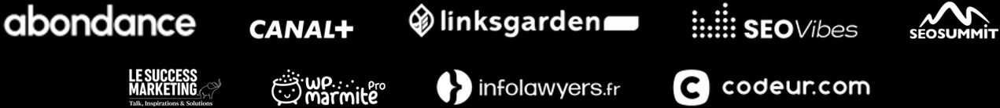
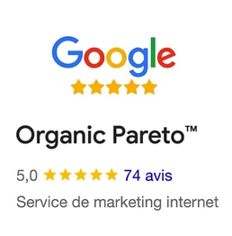

Prouvez en 6 mois que Google et les IA vous amènent de nouvelles demandes de clients.
Sans budget publicitaire, sans effort de votre part : notre équipe s'occupe de tout. Vous voyez chaque mois les appels et les demandes que ça vous apporte.
Vous dirigez une entreprise qui tourne déjà, qu'elle serve sa ville ou des clients partout en France, avec des prestations à 1 000 € et plus. Vous ne nous connaissez pas encore et vous n'avez jamais vraiment travaillé votre référencement.
On attaque d'abord les 20 % d'actions qui rapportent 80 % des résultats, sur votre offre principale et votre marché prioritaire. Mieux vaut être incontournable sur un terrain précis que quelconque partout.
Aujourd'hui dans le top 3 des références du référencement naturel en France. Ingénieur sorti major de sa promotion, formé à l'intelligence artificielle à Stanford, en Californie, l'université des fondateurs de Google. Ancien responsable du référencement de Canal+, La Halle et Adopt' Parfum, fondateur d'Organic Pareto™.
Speaker dans les plus grandes conférences de référencement et de marketing digital au monde : France, Pologne, Espagne, États-Unis, Canada, Côte d'Ivoire, Sénégal.



